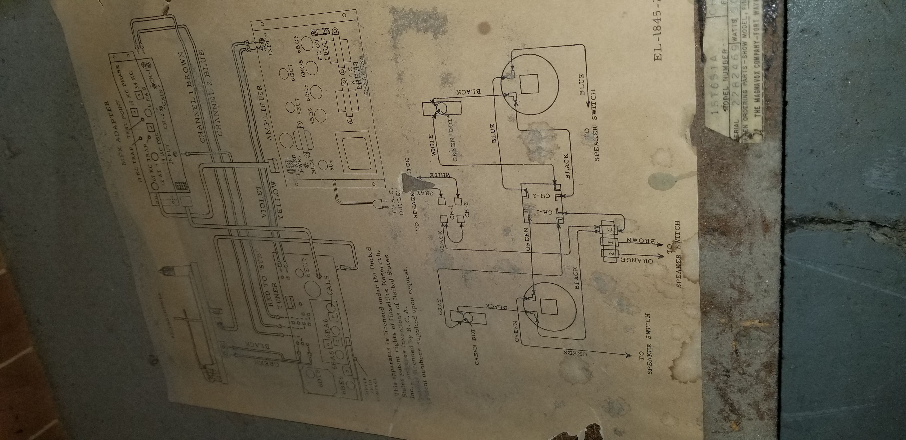

Magnavox Tube Amp Project
for this project I intend to "restore" a magnavox hi-fi, and part of that is refurbishing the electronics. the electronics consist of four main components, as shown below. they are as follows.
